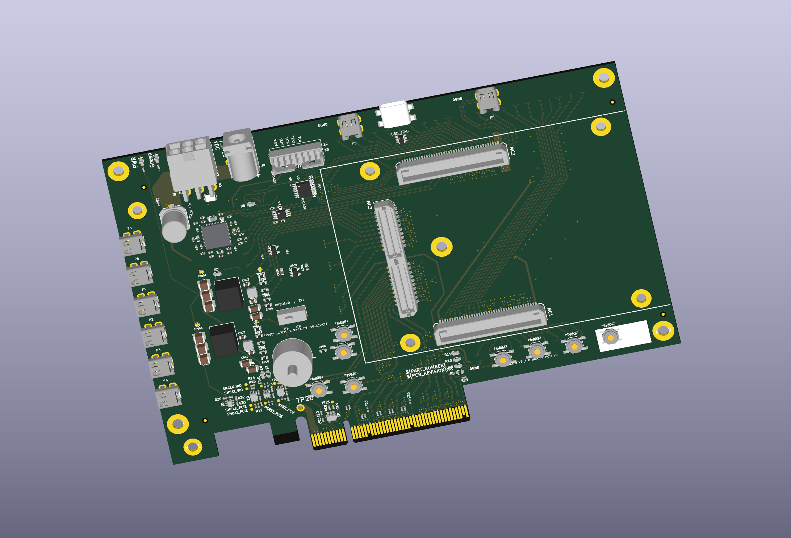

Eight-port XEM8310 carrier · AU25P
Shared power.
Shared JTAG.
One supply and one headstage programming interface, shared across eight HDMI ports.
V9 one-page schematic · 71 fewer components
- 8
- micro-HDMI ports
- 1
- shared 3.3 V source
- 351
- electrical components
Stimulation commands return over regular Bank64 differential I/O. Recording, stimulation, power and cable pin assignments are retained from V7/V8.
What changed in V9
One power source
U800 now supplies all eight ports. Each port keeps its own eFuse, reset and fault circuit. The second converter and its duplicate support parts are removed.
8 × 0.55 A + 0.05 A = 4.45 A
Normal allocation / 6 A converter rating
One headstage JTAG interface
The eight repeated translator/supervisor branches become one shared interface plus eight signal switches. The rotary selects the XEM or one headstage; unused positions are off.
The XEM keeps a separate JTAG branch. Each cable retains its own target-voltage sensing connection.
One native page
The schematic stays on one page, with circuit sources and adjacent explanation boxes. There are 351 physical components, compared with 422 in V8.
V9 changes the schematic. The earlier V8 PCB is available below for placement and 3D reference.
01 / Circuit
One page. Every connection.
The saved V9 circuit. Choose a block, drag to pan, or select a component below to find its symbol.
Loading the native schematic…
02 / Components
Find any part.
Search a reference, value or part number. Select a row to open its datasheet or locate the symbol.
| Reference | Value / part | Circuit |
|---|
No matching parts. Try J101 or U800.
03 / Earlier placement
V8 PCB reference.
The six-layer V8 placement retains the BRK geometry and routing. Its power and JTAG placement predates the V9 simplification.

V8 placement reference · PCB update to V9 remains pending04 / Review files
Take a closer look.
Review status and source information
Schematic checkpoint, 25 October 2026. Native KiCad ERC reports zero errors and 1,193 warnings (1,111 off-grid endpoints and 82 local/global label warnings). All eight HDMI pin contracts and retained circuits were checked against V8.
The normal 3.3 V allocation is 4.45 A. The sum of all eight eFuse upper current-limit bounds is about 6.19 A, so the 6 A supply does not guarantee regulation when every branch is at its limit. Cable current/voltage drop, startup, thermal behavior and fault interaction require hardware checks.
For target changes: stop TCK, set SW700 to EXTERNAL, rotate SW600, return to ONBOARD and wait at least 50 ms before clocking. The shared headstage detector checks target presence; it does not qualify the remote FPGA rail. Powered switching and rail-collapse behavior remain unverified.
V9 has no matching PCB yet. The linked V8 placement retains unfinished routing, historical filled copper and open DRC findings. Firmware, PCIe/DMA host operation, cable links and powered operation remain unverified.
Based on Opal Kelly BRK8310 A01. Shared interface adaptation is identified as a Codex design; relevant TI datasheets and source sections remain directly on the schematic.
Source manifest · Component data · Saved-file check summary · Earlier V8 placement page